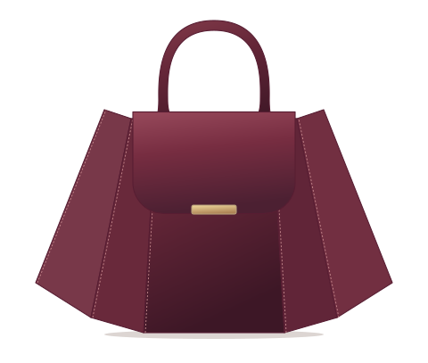

Выкройка кожаной сумки
Веер250
Десять кожаных панелей расходятся от узкой горловины и образуют два крыла. Сверху — арочная ручка и мягко скруглённый клапан.
250 ммВысота корпуса
400 ммШирина
136 ммГлубина
Полная высота с ручкой — 350 мм.
Вишнёвая кожа

Детали в натуральную величину
Раскрой
РезШовРазметка

Перед раскроем
Печатайте при 100 %. На первом листе проверьте квадрат 50 × 50 мм. На A3 дно помещается целиком. На A4 склейте его из двух листов по крестам.
Работа с кожей
Материалы и сборка
Что понадобится
Инструменты
Порядок сборки
Выкройка построена по фронтальному фото. Глубина, устройство дна и крепления разработаны для этой версии. Длины 20 пар швов проверены расчётом. Перед раскроем кожи соберите бумажный макет.